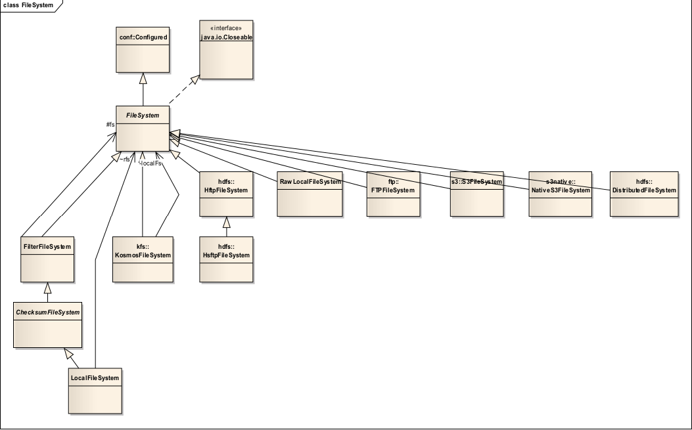
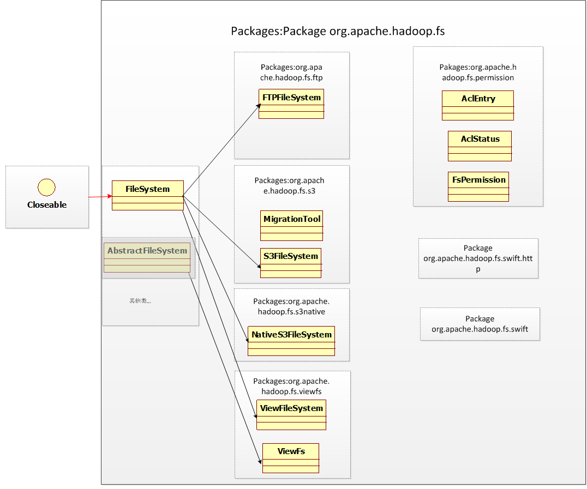
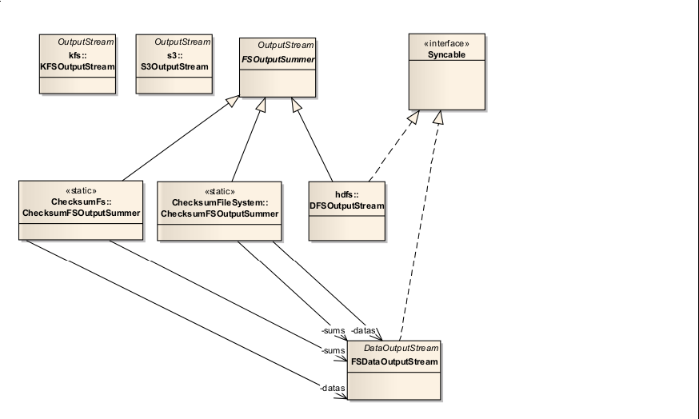
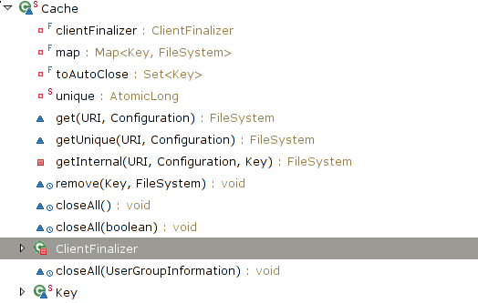
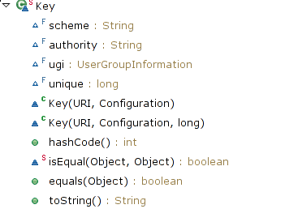

目录
1 修订记录
| 序号 | 时间 | 修订人 | 版本 |
|---|---|---|---|
| 1 | 2011 年 1 月 12 日 | 何芳、范永刚 | 1.0 |
| 2 | 2011 年 1 月 28 日 | 鲍亮 | 1.1 |
| 3 | 2014 年 5 月 18 日 | 213小组 | 1.2 |
Hadoop版本: 2.4.0
2 摘要
Hadoop是一个用于在通用硬件集群上进行大数据存储和处理的开源软件框架．
它主要包括以下几个模块：
* Hadoop Common. 包含其它模块需要的库和一些实用程序
* Hadoop Distributed File System (HDFS). 一个把数据存储在通用硬件的分布
式文件系统．在集群内能提供非常高的总计带宽
* Hadoop YARN. 用于管理集群内的计算资源和调度用户应用程序的资源管理平台
* Hadoop MapReduce. 一个用于大数据处理的编程模型．
所有的模块都在设计层面上考虑到了硬件错误．因此这些错误自动的在软件框架内被处理．
3 org.apache.hadoop.fs包总述
org.apache.hadoop.fs包提供了一个抽象文件系统的 API．该包下有80多个类和接口，有7个包．
如图3-1所示
其中有8个接口, 有四个抽象类: FileSystem, AbstractFileSystem, ChecksumFileSystem, TrashPolicy．
FileSystem 抽象类和 AbstractFileSystem 抽象类作为抽象文件系统
的基类,提供了基本的抽象操作。其中 FileSystem 类是 0.21 版本之前唯一的基类,但在 0.21 版本
中,出现了 AbstractFileSystem,该类似乎来取代 FileSystem 类原来的部分功能。在这两个基类的
基础上形成了两个类继承的层次结构。
org.apache.hadoop.fs 子包 ftp、 local、 s3、 s3native 和 Hdfs 类都是实现的对具体的文件系统操作的类.
permission文件夹实现了有关文件访问许可的功能。shell 文件夹实现了对 shell 命令的调用。
4 Hadoop文件系统概述
4.1 类层次结构
Hadoop 文件系统可以访问多个不同的具体的文件系统,如 HDFS、LocalFS和 S3 文件系统。不
同的文件系统具有不同的具体实现,Hadoop fs包下实现的是一层类似 Linux 中的 VFS 虚拟文件系统,它从不同
的文件系统中抽取了共同的操作,这些操作是一般的文件系统都具有的操作,如打开文件,创建
文件,删除文件,复制文件,获取文件的信息等。这些共同的基本操作组合在一起就形成了
FileSystem 抽象类和 AbstractFileSystem 抽象类。然后从基类派生,以实现对不同文件系统的统一操作。
注解:
HDFS是Hadoop下的另一子模块，它是一个分布式文件系统，是具体的文件系统实现．它和S3, LocalFS都是文件系统.
而org.apache.hadoop.fs包是对不同文件系统的抽象表示，它建立了一个抽象的统一的文件系统接口.
应用程序开发者通过fs包可以和不同的文件系统交互，而不用知道它所进行的操作所在的具体是什么文件系统．
而不同的文件系统开发者则可以根据fs包很容易的使其它文件系统支持Hadoop.
fs包下的类继承层次结构如图 4-1 所示:

fs各子包下的类继承层次结构如图4-2所示:

除 FilterFileSystem 外,FileSystem 的直接子类都是跟具体文件系统交互的类。包括以下子类:
* 由FileSystem派生:
* S3FileSystem(org.apache.hadoop.fs.s3) - 数据以块形式存储在Amazon S3
* NativeS3FileSystem(org.apache.hadoop.fs.s3) - 文件以原生格式存储在Amazon S3
* ChRootedFileSystem(org.apache.hadoop.fs.viewfs) - 根目录为已有文件系统的某个路径的文件系统
* ViewFileSystem(org.apache.hadoop.fs.viewfs) - 实现了客户端的挂载表
* DistributedFileSystem(org.apache.hadoop.hdfs) - 为DFS system 实现了抽象类FileSystem. 用户代码通过该类和Hadoop DistributedFileSystem交互
* LocalFileSystem - 为还有校验功能的本地文件系统实现了FileSystem API(内部使用RawLocalFileSystem, Decorator Pattern)
* RawLocalFileSystem - 为原生本地文件系统实现了FileSystem API
* FTPFileSystem(org.apache.hadoop.fs.ftp) - 基于FTP协议和FTP服务器交互的FileSystem API实现
* 由AbstractFileSystem派生:
* RawLocalFs(org.apache.hadoop.fs.local) - 内部委派给RawLocalFileSystem来实现AbstractFileSystem API(delegation pattern)
* FtpFs(org.apache.hadoop.fs.ftp) - 内部委派给FTPFileSystem来实现AbstractFileSystem API(delegation pattern)
* LocalFs(org.apache.hadoop.fs.local) - 和LocalFileSystem的实现类似, 继承ChecksumFs. (内部使用RawLocalFs实现, Decorator Pattern)
* ViewFs(org.apache.hadoop.fs.viewfs) - 完全在客户端的内存中实现挂载表
* Hdfs - 为Hadoop DistributedFileSystem实现了AbstractFileSystem API
注解:
* LocalFileSystem是加上Checksum功能的本地文件系统，该类和操作系统本地文件系统交互，内部使用RawLocalFileSystem.
RawLocalFileSystem是代表没有Checksum功能的操作系统本地文件系统．
* 继承自AbstractFileSystem的LocalFS和RawLocalFs结构同上．其内部实现被委派给RawLocalFileSystem.
* Amazon S3没有5G限制
Hadoop 的使用者可以分为两类,应用程序编写者和文件系统实现者。在 Hadoop 0.21 版本之
前, FileSystem 类作为一般(抽象)文件系统的基类,一方面为应用程序编写者提供了使用 Hadoop
文件系统的接口,另一方面,为文件系统实现者提供了实现一个文件系统的接口(如 hdfs,本地
文件系统,FtpFs等等)。
但在 Hadoop 0.21 版本中,出现了 FileContext 类和 AbstractFileSystem 类,
通过这两个 API,可以将原来集中于 FileSystem 一个类中的功能分开,让使用者更加方便的在应
用程序中使用多个文件系统。
FileContext 这个 API 还没有在 hadoop 中被大量的使用,因为还没有
被合并到 mapreduce 计算中,但是它包含了正常的 FileSystem 接口没有的新功能,如支持 hdfs
层面的软链接等。
FileContext 类是用来取代 FileSystem 类,向 应用程序编写者 提供使用 Hadoop
文件系统的接口,而原来的 FileSystem 则仅由 文件系统实现者 使用。估计 AbstractFileSystem 类将
来会取代 FileSystem 类。
从图 4-1, 4-2 中可以看出 AbstractFileSystem 对应 FileSystem,FilterFs 对应 FiterFileSystem,
ChecksumFs 对应 ChecksumFileSystem,LocalFs 对应 LocalFileSystem, RawLocalFs 对应 RawLocalFileSystem。
而在各个具体的文件系统类, FtpFs 和RawLocalFs
通过DelegateToFileSystem(delegation pattern)委派给已有的FTPFileSystem, RawLocalFileSystem,
ViewFs, hdfs的实现是根据各个文件系统的特点直接实现的
4.2 输入输出流
Hadoop 中类的设计在很多地方模仿了 Java。典型的就是文件的输入输出流。
如图4-3:

如图4-4

4.2.1 Java中的IO
可将 Java 库的 IO 类分割为输入与输出两个部分,这一点在用 Web 浏览器阅读联机 Java 类
文档时便可知道。通过继承,从 InputStream(输入流)衍生的所有类都拥有名为 read()的基本方
法,用于读取单个字节或者字节数组。类似地,从 OutputStream 衍生的所有类都拥有基本方法
write(),用于写入单个字节或者字节数组。然而,我们通常不会用到这些方法;它们之所以存在,
是因为更复杂的类可以利用它们,以便提供一个更有用的接口。因此,我们很少用单个类创建自
己的系统对象。一般情况下,我们都是将多个对象重叠在一起,提供自己期望的功能。我们之所
以感到 Java 的流库(Stream Library)异常复杂,正是由于为了创建单独一个结果流,却需要创建
多个对象的缘故。很有必要按照功能对类进行分类。库的设计者首先决定与输入有关的所有类都
从 InputStream 继承,而与输出有关的所有类都从 OutputStream 继承。
4.2.1.1 InputStream
InputStream 的作用是标志那些从不同起源地产生输入的类。这些起源地包括(每个都有一个
相关的 InputStream 子类):
- 字节数组
- String 对象
- 文件
- “管道”,它的工作原理与现实生活中的管道类似:将一些东西置入一端,它们在另一端
出来 - 一系列其他流,以便我们将其统一收集到单独一个流内
- 其他起源地,如 Internet 连接等
除此以外,FilterInputStream 也属于 InputStream 的一种类型,用它可为“装饰器”类提供一
个基础类(装饰器模式), 以便将属性或者有用的接口同输入流连接到一起
ByteArrayInputStream:允许内存中的一个缓冲区作为 InputStream,使用从中提取字节的缓冲
区作为一个数据源使用。通过将其同一个 FilterInputStream 对象连接,可提供一个有用的接口。
StringBufferInputStream:将一个 String 转换成 InputStream 一个 String(字串)。基础的实施
方案实际采用一个 StringBuffer (字串缓冲)作为一个数据源使用。通过将其同一个 FilterInputStream
对象连接,可提供一个有用的接口。
FileInputStream:用于从文件读取信息代表文件名的一个 String,或者一个 File FileDescriptor
对象作为一个数据源使用。通过将其同一个 FilterInputStream 对象连接,可提供一个有用的接口。
PipedInputStream:读出与之相关的PipedOutputStream 写的数据。实现了“管道化”的概念。
SequenceInputStream:将两个或更多的 InputStream 对象转换成单个 InputStream. 参数为两个
InputStream 对象或者一个 包含InputStream的Enumeration容器.
作为一个数据源使用, 通过将其同一个 FilterInputStream 对象连接,可提供一个有用的接口.
FilterInputStream:作为具体装饰器类的抽象类; 装饰器类为其他 InputStream 类提供了有用的功能。
4.2.1.2 OutputStream
这一类别包括的类决定了我们的输入往何处去:一个字节数组(但没有 String;假定我们可用
字节数组创建一个);一个文件;或者一个“管道”。
除此以外,FilterOutputStream 为装饰器类提供了一个基础类,它将属性或者有用的接口
同输出流连接起来
ByteArrayOutputStream:在内存中创建一个缓冲区。我们发送给流的所有数据都会置入这个
缓冲区。可选缓冲区的初始大小用于指出数据的目的地。若将其同 FilterOutputStream 对象连接到
一起,可提供一个有用的接口。
FileOutputStream:将信息发给一个文件,用一个 String 代表文件名,或选用一个 File 或
FileDescriptor 对象用于指出数据的目的地。若将其同 FilterOutputStream 对象连接到一起,可提供
一个有用的接口。
PipedOutputStream:我们写给它的任何信息都会自动会从相关的 PipedInputStream 读出。实
现 了 “ 管 道 化 ” 的 概 念 。 PipedInputStream为多线程处理指出自己数据的目的地, 将其同
FilterOutputStream 对象连接到一起,便可提供一个有用的接口
FilterOutputStream 对作为装饰器接口使用的类进行抽象处理;那个装饰器为其它OutputStream
类提供了有用的功能
4.2.1.3 DataInputStream
DataInputStream 从 FilterInputStream 派生, 需要传入一个InputStream.
数据输入流允许应用程序以与机器无关方式从底层输入流中读取基本 Java 数据类型。应用程
序可以使用数据输出流写入稍后由数据输入流读取的数据。DataInputStream 对于多线程访问不一
定是安全的。线程安全是可选的,它由此类方法的使用者负责。
4.2.1.4 DataOutputStream
DataOutputStream 数据输出流允许应用程序以适当方式将基本 Java 数据类型写入输出流中。
然后,应用程序可以使用数据输入流将数据读入。
4.2.2 Hadoop中的IO
在 Hadoop 中, FSInputStream(Abstract Class)、
FSDataInputStream 和 FSDataOutputStream 的作用与 InputStream、
DataInputStream 和 DataOutputStream 在 Java IO 中的作用类似。用 FileSystem 的 create 方法创建
一个输出流时的返回值类型为 FSDataOutputStream,而 open 方法则返回一个 FSDataInputStream 实例。
Hadoop 中并没有 FSOutputStream,有些FileSystem类从 OutputStream 派生实现了自己的OutputStream.
很多文件系统都会从 FSInputStream 派生出和自己特定文件系统相关的FSInputStream.
通过这种方式实现自己特定的输入输出流. 如 S3InputStream RawLocalFileSystem 等等。
5 FileSystem深入分析
5.1 fs中的接口
org.apache.hadoop.fs包中的接口不多，有：
- CanSetDropBehind - 配置流是否应该丢掉缓存
- CanSetReadahead - 设置预读取流
- FsConstants 表示文件系统有关的常量。
- PathFilter - 测试抽象路径名是否应该包含在某个抽象路径名表中
- PositionedReadable 和Seekable 提供了随机读写功能
- Syncable 文件同步
- VolumeId - 标识一个硬盘位置的接口
5.2 FileSystem
FileSystem 的类图如图5-1:

由此可见FileSystem 是一个很大的抽象类。在fs 包中，最重要的可以说是FileSystem 抽象类。
它定义了文件系统中涉及的一些基本操作，如：create，rename ，delete…
另外包括一些分布式文件系统具有的操作：copyFromLocalFile, copyToLocalFile,…
类似于Ftp 中put 和get 操作。
LocalFileSystem 和DistributedFileSystem，继承于此类，
分别实现了对本地文件系统和分布式文件系统的FileSystem API。
5.2.1 Configured基类和Closeable接口
FileSystem 抽象类从Configured 基类派生，并实现了Closeable 接口。
Configured 基类的源代码如下，该基类仅是简单的提供了访问配置文件的方法。
public class Configured implements Configurable {
private Configuration conf;
/** Construct a Configured. */
public Configured() {
this(null);
}
/** Construct a Configured. */
public Configured(Configuration conf) {
setConf(conf);
}
// inherit javadoc
@Override
public void setConf(Configuration conf) {
this.conf = conf;
}
// inherit javadoc
@Override
public Configuration getConf() {
return conf;
}
}Closeable接口的代码如下, 该接口主要是声明关闭流的close方法, 调用close方法释放与该流相关的所有系统资源
public interface Closeable extends AutoCloseable {
/**
* Closes this stream and releases any system resources associated
* with it. If the stream is already closed then invoking this
* method has no effect.
*
* @throws IOException if an I/O error occurs
*/
public void close() throws IOException;
}5.2.2 FileSystem的内部类和属性
内部类有Cache, Statistics.
FileSystem内部的属性见下面代码:
public static final String FS_DEFAULT_NAME_KEY =
CommonConfigurationKeys.FS_DEFAULT_NAME_KEY;
public static final String DEFAULT_FS =
CommonConfigurationKeys.FS_DEFAULT_NAME_DEFAULT;
public static final Log LOG = LogFactory.getLog(FileSystem.class);
/**
* Priority of the FileSystem shutdown hook.
*/
public static final int SHUTDOWN_HOOK_PRIORITY = 10;
/** FileSystem cache */
static final Cache CACHE = new Cache();
/** The key this instance is stored under in the cache. */
private Cache.Key key;
/** Recording statistics per a FileSystem class */
private static final Map<Class<? extends FileSystem>, Statistics>
statisticsTable =
new IdentityHashMap<Class<? extends FileSystem>, Statistics>();
/**
* The statistics for this file system.
*/
protected Statistics statistics;
/**
* A cache of files that should be deleted when filsystem is closed
* or the JVM is exited.
*/
private Set<Path> deleteOnExit = new TreeSet<Path>();
boolean resolveSymlinks;5.2.2.1 Cache
FileSystem 内部类 Cache 用来缓存文件系统对象。
Cache成员, 方法见下图:

在检索文件系统时,如果缓存未被禁用,则会首先从缓存中读取。
Cache 中有两个内部类,ClientFinalizer 和 Key。
ClientFinalizer类:
ClientFinalizer类为一线程类,当Java虚拟机停止运行时,该线程才会运行。而运行时,run
方法会调用 Cache.closeAll(true)方法,进行清理工作。
内部静态类Key,顾名思意,它作为Cache中HashMap
有关文件系统的 Uri 的信息,而其中的各个方法也是简单明了。

Cache类中的集合toAutoClose属性用来表示是否需要自动关闭Key所对应的文件系统。
Cache方法get()和getUnique()内部仅简单地调用了getInternal()方法。
其代码所下：
private FileSystem getInternal(URI uri, Configuration conf, Key key) throws IOException{
FileSystem fs;
synchronized (this) {
fs = map.get(key);
}
if (fs != null) {
return fs;
}
fs = createFileSystem(uri, conf);
synchronized (this) { // refetch the lock again
FileSystem oldfs = map.get(key);
if (oldfs != null) { // a file system is created while lock is releasing
fs.close(); // close the new file system
return oldfs; // return the old file system
}
// now insert the new file system into the map
if (map.isEmpty()
&& !ShutdownHookManager.get().isShutdownInProgress()) {
ShutdownHookManager.get().addShutdownHook(clientFinalizer, SHUTDOWN_HOOK_PRIORITY);
}
fs.key = key;
map.put(key, fs);
if (conf.getBoolean("fs.automatic.close", true)) {
toAutoClose.add(key);
}
return fs;
}
}在getInternal中调用FileSystem.createFileSystem打开一个文件系统
private static FileSystem createFileSystem(URI uri, Configuration conf
) throws IOException {
Class<?> clazz = getFileSystemClass(uri.getScheme(), conf);
if (clazz == null) {
throw new IOException("No FileSystem for scheme: " + uri.getScheme());
}
FileSystem fs = (FileSystem)ReflectionUtils.newInstance(clazz, conf);
fs.initialize(uri, conf);
return fs;
}ReflectionUtils.newInstance()则利用 Java 的反射机制,调用 clazz 的构造函数,设置配置文件
后,将生成的对象返回。
Cache方法 synchronized void remove(Key key, FileSystem fs)用来从映射 map 中删除相应的 key 和 fs
对应的映射。
Cache方法 synchronized void closeAll(boolean onlyAutomatic) throws IOException 用来删除所有的映
射,并调用文件系统的 close()方法。当 onlyAutomatic 为 true 时,仅删除在集合 toAutoClose 中含
有的键值对。